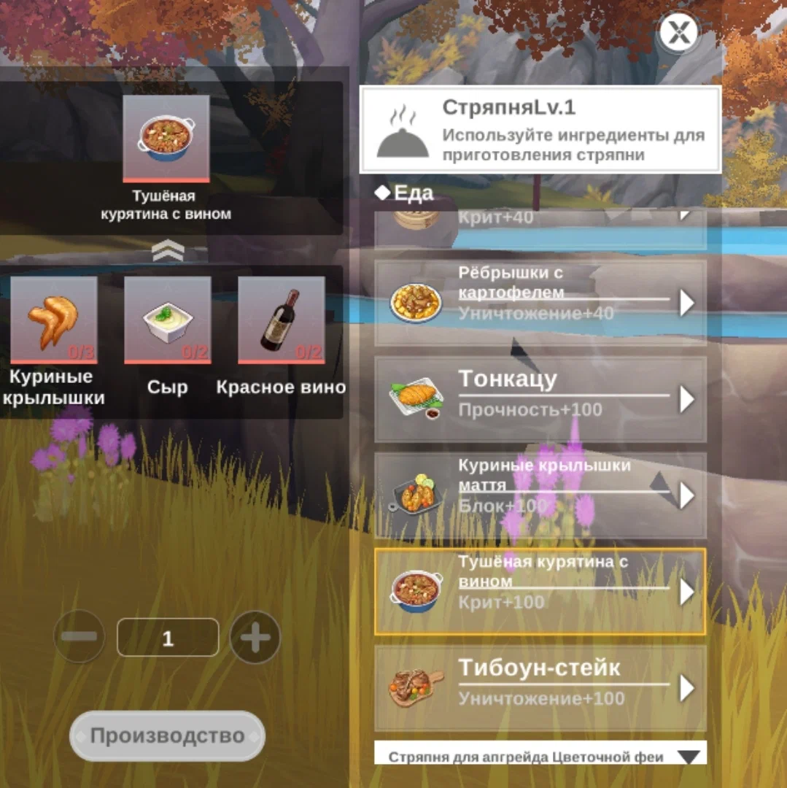
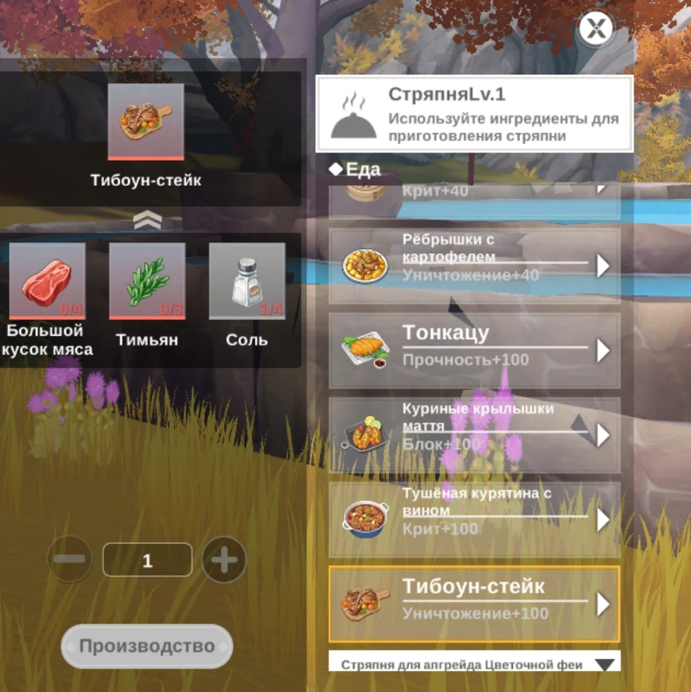

Рецепты стряпни (еды) The Legend of Neverland
Стряпня в игре нужна для баффов (прирост к статистикам), есть временные баффы, есть же постоянный прирост, но он довольно смешной. Для стряпни нужно прокачивать рыбалку, продавая рыбу получаем монеты за которые можно покупать ингредиенты в магазине.
Хочу сказать, что чем выше рыбалка, тем больше стоит рыба, от сюда больше монет.По мере прокачки рыбалки у вас будут открываться новые ингредиенты.Открыть новые рецепты можно во вкладке исследования.
Вот список открытых рецептов:
Кукурузные хлопья: Кукуруза х3, Молоко х4, Соль х4 / Прочность +20
Грибной суп-пюре: Грибы х3, Молоко х4, Черный перец х3 / Блок +20
Попкорн: Кукуруза х5, Молоко х4, Сливочное масло х4 / Крит +20
Жареный рис: Яйцо х3, Картофель х4, Рис х4 / Уничтожение +20
Макароны с томатами: Пшеница х3, Лук х3, Томат х3 / Прочность +40
Жареный рис с грибами: Грибы х3, Морковь х4, Рис х3 / Блок +40
Пельмени: Пшеница х4, Креветки х3, Соль х4 / Крит +40
Рёбрышки с картофелем: Картофель х5, Мясо х4, Соль х4 / Уничтожение +40
Жареные луковые кольца: Пшеница х4, Лук х4, Соль х5 / Защита +80
Ассорти из жареных закусок: Сельдерей х2, Клубника х3, Бекон х2 / Атака +80
Тонкацу: Яйцо х6, Пшеница х5, Мясо х5 / Прочность +100
Куриные крылышки маття: Куриные крылышки х3, Тимьян х2, Сахар х3 / Блок +100
Тушёная курятина с вином: Куриные крылышки х3, Сыр х2, Красное вино х2 / Крит +100
Тибоун - стейк: Большой кусок мяса х4, Тимьян х3, Соль х4 / Уничтожение +100

